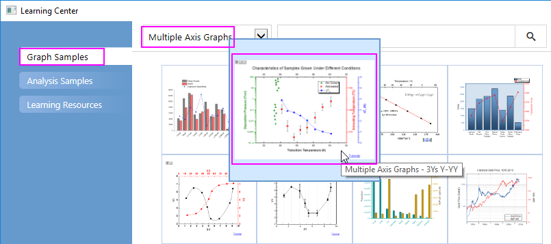
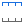
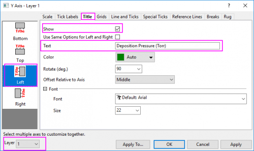

Hinweis: Dieses Tutorial ist mit dem Ordner 3Ys Y-YY des Projekts "Tutorial Data" verbunden: <Origin EXE Folder>\Samples\Tutorial Data.opj.
- Klicken Sie auf die schwarze Zeichnung in Layer1 und in der Minisymbolleiste auf die Schaltfläche Diagramm ändern in
 , um den Zeichnungstyp in Punktdiagramm zu ändern.
, um den Zeichnungstyp in Punktdiagramm zu ändern. - Klicken Sie erneut auf diese Zeichnung und in der Minisymbolleiste auf die Schaltfläche Symbolrandfarbe
 , um die Symbolfarbe auf Olive zu setzen; klicken Sie auf die Schaltfläche Zeichnungssymbol
, um die Symbolfarbe auf Olive zu setzen; klicken Sie auf die Schaltfläche Zeichnungssymbol  , um das Symbol in Dreieck zu ändern.
, um das Symbol in Dreieck zu ändern. - Klicken Sie auf die Datenzeichnung (auf ein Symbol, nicht auf einen Fehlerbalken) in Layer2 und in der Minisymbolleiste auf die Schaltfläche Diagramm ändern in , um den Zeichnungstyp in Punktdiagramm zu ändern. Klicken Sie auf den Fehlerbalken dieser Zeichnung und in der Minisymbolleiste auf die Schaltfläche Linien-/Rahmenfarbe, um die Farbe in Schwarz zu ändern.
- Klicken Sie auf die Zeichnung in Layer3 und in der Minisymbolleiste auf die Schaltfläche Zeichnungssymbol , um das Symbol in einen gefüllten Kreis zu ändern.
- Klicken Sie auf die untere X-Achse und in der Minisymbolleiste auf die Schaltfläche Achsenskalierung
 , um den Dialog Achsenskalierung zu öffnen und die Skalierung der X-Achse, wie unten zu sehen, zu konfigurieren:
, um den Dialog Achsenskalierung zu öffnen und die Skalierung der X-Achse, wie unten zu sehen, zu konfigurieren: - Klicken Sie erneut auf die untere X-Achse und in der Minisymbolleiste auf die Schaltfläche Gegenüberliegende Achse zeigen , um die obere X-Achse zu zeigen.
- Klicken Sie erneut auf die obere Achse, die wir gerade hinzugefügt haben, und in der Minisymbolleiste auf die Schaltfläche Hilfsstrichsbeschriftungen zeigen
 , um die Hilfsstrichsbeschriftungen für die obere X-Achse zu zeigen.
, um die Hilfsstrichsbeschriftungen für die obere X-Achse zu zeigen.
- Klicken Sie auf die linke grüne Y-Achse und in der Minisymbolleiste auf die Schaltfläche Achsenskalierung , um den Dialog Achsenskalierung zu öffnen und die Skalierung der linken Y-Achse, wie unten zu sehen, zu konfigurieren:
- Klicken Sie auf die rechte grüne Y-Achse (die erste) und in der Minisymbolleiste auf die Schaltfläche Achsenskalierung , um den Dialog Achsenskalierung zu öffnen und den Wert für Von = 765 und für Bis = 795 zu setzen. Legen Sie das Inkrement der Großen Hilfsstriche auf den Wert 10 fest.
- Klicken Sie auf die rechte blaue Y-Achse (die zweite) und in der Minisymbolleiste auf die Schaltfläche Achsenskalierung , um den Dialog Achsenskalierung zu öffnen und die Achsenskalierung für den Bereich von 0 bis 6 ablesbar zu machen. Legen Sie das Inkrement der Großen Hilfsstriche auf den Wert = 1 fest.
\l(1.1) As Grown \l(2.1) Annealed \l(3.1) \g(D)T\-(C)
- 
- Klicken Sie auf die Schaltfläche Anwenden. Wechseln Sie separat zu Layer2 und Layer3 mit Hilfe der Auswahlliste Layer unten links im Dialog Achsen. Setzen Sie den Achsentitel auf Annealing Temperature (\+(0)C) und \g(D)T\-(c) (K) wie oben. Klicken Sie auf OK, um den Dialog zu schließen.